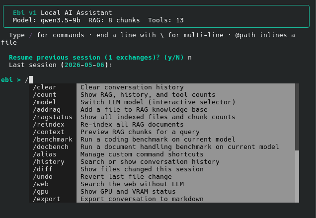

Who's Managing your cloud infrastructure?
Is it someone in a foreign country? Do you even know?
Don't you think you should?
Why should you even care?
If you host your cloud services on Azure or anywhere else not owned and opperated by you, you dont really know who has access to the data that lives there
So what is BOLTT?
BOLTT is a locally deployed "cloud" you run on your own infrastructure. Not a new concept. This is how things were done before the cloud. What makes BOLTT special is how easy it is to configure and employ, thanks to our cat friend Ebi
Ebi is the AI thred woven through every system and service in BOLTT.
She sees "every nibble" in your system and can administer your system the way a seasoned system admin would. Ebi is a sys admin tool, a llm for your employees, and sentry for physical security and your peice of mind. You dont need to hunt information, you can just ask:
- "Ebi, generate me a Fedramp report."
- "Ebi, tell me who has logged into the system in the last 6 hours and where they connected from."
- "Ebi, are there any unpatched systems on the network right now?"
And so much more.
